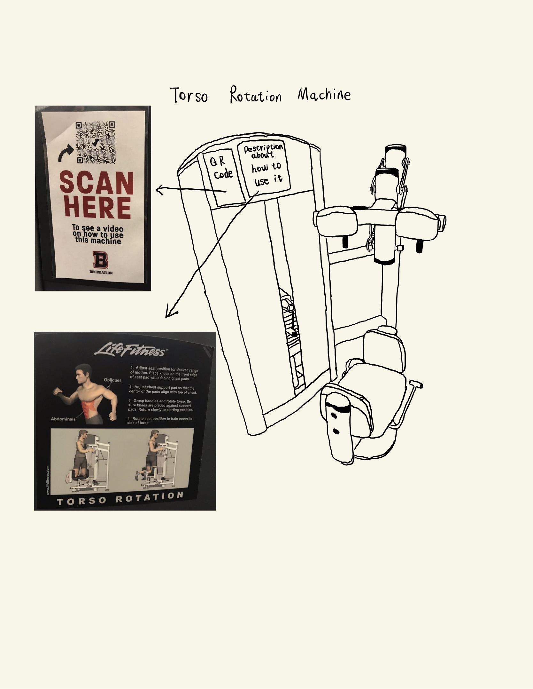
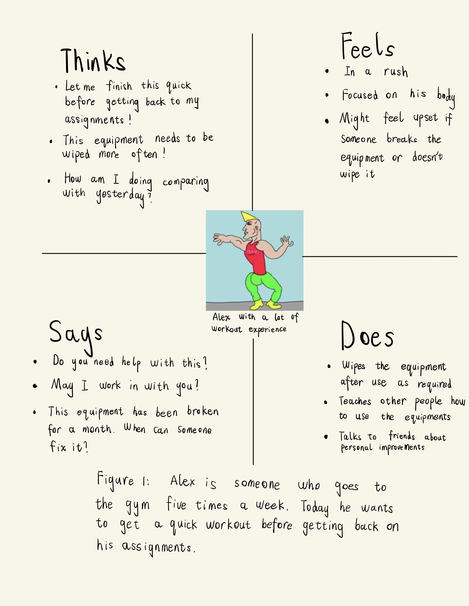
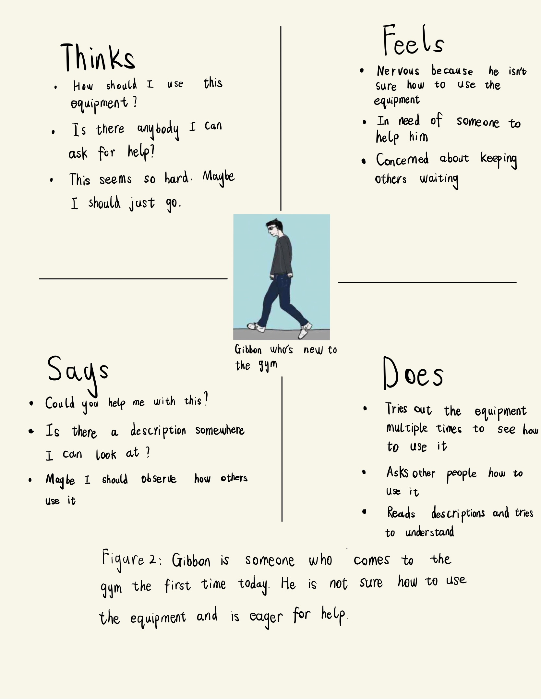
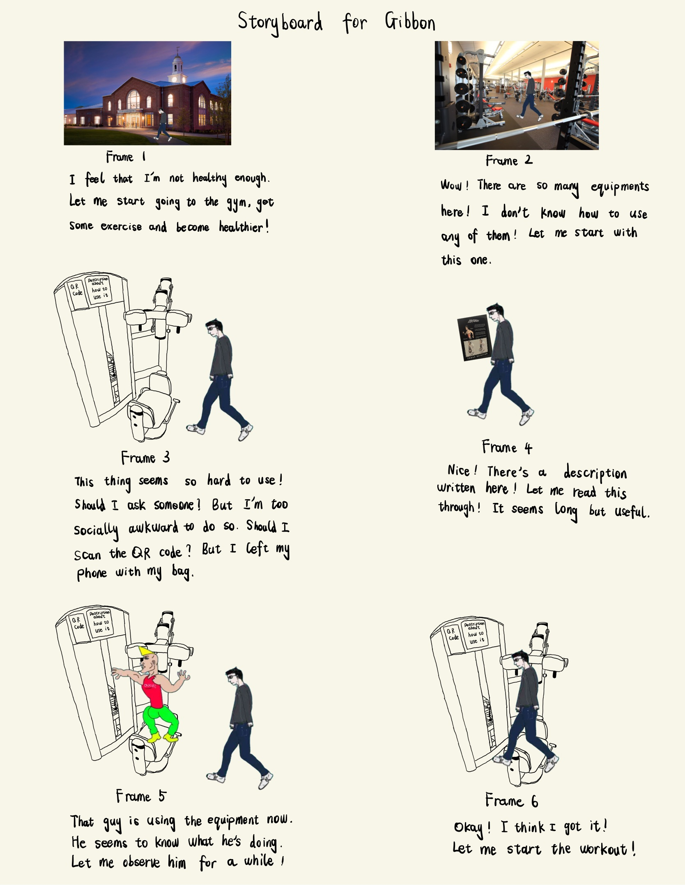

CS1300 HW1
Part 1: The Sketch
This is a sketch of the Torso Rotation Machine in the Nelson Fitness Center. There is a QR code and a description about how to use it on the side of it but people rarely look at that. I interviewed some people using it with the questions below in Part 2.2.

Part 2: Recording Observations
1)
- The reactions of users vary. Some users are especially used to this equipment and just come, adjust it to a seat position that suits them, and start working out. Some seem not sure how to use it and just stick to the seat position it is at.
- Users spend a lot of time looking at their phones in between using the equipment.
- About half of the users wipe the equipment with alcohol wipes after using it. The other half just leave without wiping.
2)
- How long did it take for you to figure out how to use this equipment?
- What are some things that make it difficult for you to use this equipment?
- Have you scanned the QR code or read the description about how to use it?
- Everyone answers “pretty quick” to the first question but I feel some of them don’t really understand how to use the equipment because most of them didn’t adjust it before using. When I told them that by adjusting the seat position, you can change the range you are rotating your body, some of them responded “Wow, that’s cool”, indicating that they didn’t know this feature before.
- One user said that the fact that some people don’t wipe it after use makes it difficult because you need to wipe it by yourself at the beginning. Others mention that it’s hard to figure out how to adjust the chest support pad.
- None of them have scanned the QR code or read the description. Users said that they used similar equipment before, learned by observing others, and figured out how to use it by trying it out.
Part 3: Personas
The two personas here are Alex and Gibbon. Alex is someone who is very used to using this equipment and Gibbon is someone who uses it the first time.


Part 4: Storyboards
The story here describes how Gibbon goes to the gym for the first time and learns about using the Torso Rotation Machine by reading the description and observing others.
